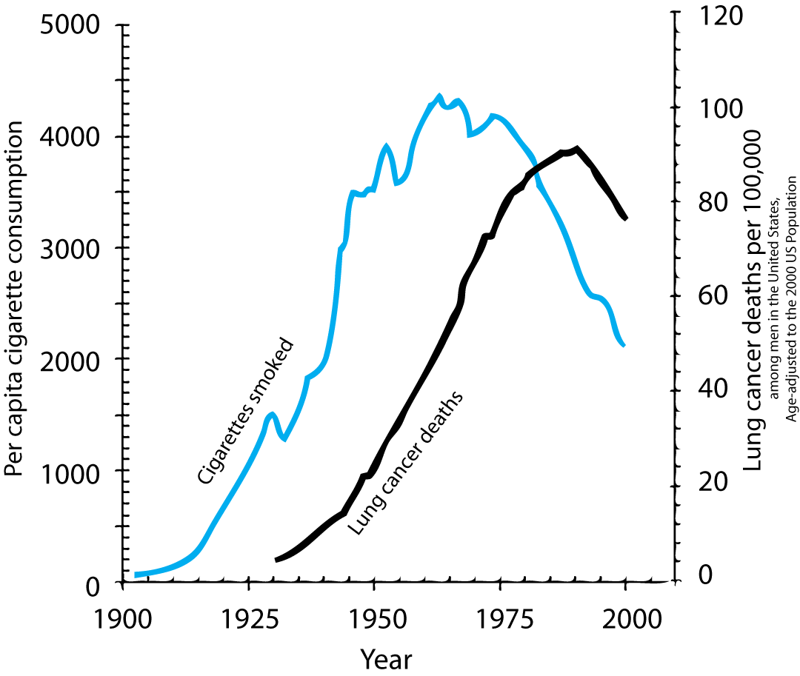
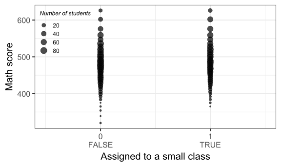
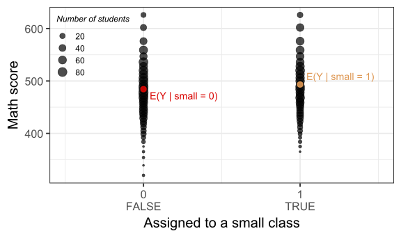
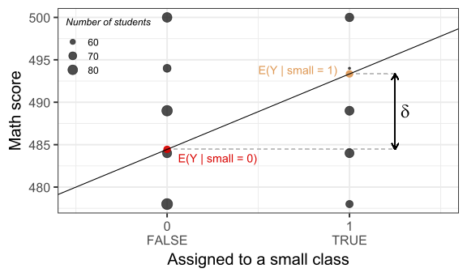

FMB819: R을 이용한 데이터분석
Introduction to Causality
Today’s Agenda
인과관계(Causality) vs. 상관관계(Correlation)
잠재 결과 프레임워크(Potential Outcomes Framework) (a.k.a. Rubin의 인과 모델)
무작위 통제 실험(Randomized Controlled Trials, RCTs)
학급 규모(class size)와 학생 성취(student performance)에 대한 실증 분석 심화
인과관계의 개념
인과관계(Causality)란 무엇을 의미하는가?
X가Y를 유발한다(causes).. 의미?만약 다른 모든 것은 그대로 둔 채(unchanged) 우리가
X의 값을 변경(intervene and change)한다면,그 결과로
Y도 변화하게 된다는 의미.여기서 핵심은 “다른 모든 것은 변하지 않는다”는 가정임.
이는 흔히 “세테리스 파리부스(ceteris paribus, all else equal)” 가정이라고 불림.주의할 점: 이것은
X가Y를 유발하는 유일한 요인이라는 뜻이 아님!
상관관계 vs. 인과관계
“상관관계는 인과관계가 아니다”라는 말은 매우 흔하게 사용됨.
그런데 왜 이것이 사실인지 설명할 수 있는가?일부 상관관계는 명백히 인과관계를 의미하지 않음.
(예: 가짜 상관관계 모음)
상관관계 vs. 인과관계: 흡연과 폐암
그러나 모든 상관관계가 쉽게 기각될 수 있는 것은 아님.
흡연이 폐암을 유발하는가?
오늘날 우리는 답이 “예(YES)”라는 것을 알고 있음!
하지만 1950년대로 돌아가 보자.
- 당시 폐암 사망률이 급격히 증가하기 시작함…
- … 그리고 그 이전에 담배 소비가 빠르게 증가했음.
- 당시 폐암 사망률이 급격히 증가하기 시작함…
- 이 그래프만 보면, “흡연이 폐암을 유발한다”고 쉽게 결론 내릴 수 있음.
상관관계 vs. 인과관계: 흡연과 폐암
- 당시에는 여전히 회의적인 사람들이 많았으며, 유명한 통계학자들조차도 이를 의심했음.
거시적 교란 요인 (Macro Confounding Factors)
폐암을 유발할 수 있는 다른 거시적 요인들도 1900년~1950년 사이에 변화했음:
- 도로 포장(tarring of roads),
- 자동차 배기가스(납 함유 가솔린 연기) 흡입,
- 전반적인 대기 오염 증가.
자기 선택 편향 (Self Selection)
흡연자와 비흡연자는 원래부터 다를 가능성이 있음:
관측 가능한 특징에 따른 선택(selection on observables): 연령, 교육 수준, 소득 등.
관측 불가능한 특징에 따른 선택(selection on unobservables): 유전자 (Fisher가 제안한 가설적 유전자 교란 이론).
상관관계 vs. 인과관계: 다른 예시들
교육 연수(years of education)와 소득(income) 간의 관측된 상관관계가 실제로 교육의 인과적 효과를 반영하지 않을 수도 있는 이유는?
- 개인이 교육 수준을 선택하는 방식이 다를 수 있음. 고등 교육을 받는 사람들은 원래부터 높은 선천적 능력을 가졌거나, 학교 생활을 즐기며 학업에 강한 성향을 가질 가능성이 높음. \(\rightarrow\) 자기 선택 편향(Self-selection)
고용률(employment rate)과 최저임금(minimum wage) 간의 관측된 상관관계가 실제로 최저임금의 인과적 효과를 반영하지 않을 수도 있는 이유는?
- 정책 결정자들은 고용률이 높은 시기에 최저임금을 인상할 가능성이 있음 \(\rightarrow\) 역인과관계(reverse causality) / 동시성(simultaneity)
경제 성장(economic growth)과 금융 발전(financial development) 간의 관측된 상관관계가 실제로 금융 부문의 인과적 효과를 반영하지 않을 수도 있는 이유는?
- 경제 성장이 금융 발전을 촉진하는 것일 수도 있음 (반대로 금융 발전이 경제 성장을 유발하는 것이 아닐 가능성) \(\rightarrow\) 역인과관계(reverse causality) / 동시성(simultaneity)
경제 이론과의 연결
경제 이론(Economic theory)에 따르면, 개인은 자신의 효용(utility)을 극대화(maximise)하기 위해 행동함.
따라서 개인들은 무작위(random ways)로 행동하지 않음. \(\rightarrow\) 즉, 개인의 행동은 내생적(endogenous)이라고 볼 수 있음.
데이터에서 발견된 상관관계를 무조건 믿어서는 안 됨. 언제나 의심하는 태도(suspicious)가 필요함.
📌 그렇다면, 어떻게 인과적 주장(causal claims)을 할 수 있을까?
잠재 결과 프레임워크(Potential Outcomes Framework)가 유용한 길잡이
Causal Inference
잠재 결과 프레임워크 (The Potential Outcomes Framework)
이 모델은 Rubin의 인과 모델(Rubin Causal Model)이라고도 불리며, 통계학자 Donald Rubin이 1970년대에 이를 일반화하고 체계화함.
핵심 아이디어 (Key Idea)
각 개인은 여러 개의 대체적 처치 상태(alternative treatment states)에 노출될 수 있음.
- 담배를 피우거나, 시가를 피우거나, 아예 피우지 않거나.
- 가난한 지역, 중산층 지역, 부유한 지역에서 성장하는 것.
- 소규모 학급과 대규모 학급에서 배우는 것.
실용적인 정의
처치 변수 \(D_i\)를 이진 변수(binary variable)로 정의 \[
D_i = \begin{cases}
1 \textrm{ if individual $i$ is treated} \\\\
0 \textrm{ if individual $i$ is not treated}
\end{cases}
\]
✅ Treatment group
all the individuals such that \(D_i = 1\).
❌ Control group
all the individuals such that \(D_i = 0\).
잠재 결과 프레임워크 (The Potential Outcomes Framework)
이 프레임워크에서는 각 개인이 두 개의 잠재적 결과(potential outcomes)를 가짐. 하지만 실제로는 하나의 관측된 결과(observed outcome) \(Y_i\)만 확인 가능함.
- \(Y_i^1\): 개인 \(i\)가 처치를 받았을 경우의 잠재적 결과 \((D_i = 1)\)
- \(Y_i^0\): 개인 \(i\)가 처치를 받지 않았을 경우의 잠재적 결과 \((D_i = 0)\)
- \(Y_i^1\): 개인 \(i\)가 처치를 받았을 경우의 잠재적 결과 \((D_i = 1)\)
현실에서는 단 하나의 결과 \(Y_i\)만을 관측할 수 있으며, 이는 다음과 같이 표현됨:
\[ Y_i = D_i \times Y_i^1 + (1- D_i) \times Y_i^0 \]
- 🔥 인과 추론의 근본적인 문제 (Fundamental Problem of Causal Inference) 어떤 개인 \(i\)에 대해, 두 개의 잠재적 결과 중 오직 하나만 관측할 수 있음.
(Holland, 1986)
잠재 결과 프레임워크 (The Potential Outcomes Framework)
- 관측되지 않은 잠재적 결과도 이론적으로 존재하며, 이를 반사실적 결과(counterfactual outcome)라고 함.
| Group | \(Y_i^1\) | \(Y_i^0\) |
|---|---|---|
| 처치 그룹 \((D_i = 1)\) | ✅ 관측 가능 (Observed as \(Y_i\)) | ❌ 반사실적 결과 (Counterfactual) |
| 통제 그룹 \((D_i = 0)\) | ❌ 반사실적 결과 (Counterfactual) | ✅ 관측 가능 (Observed as \(Y_i\)) |
- 위 개념을 바탕으로, 개별 처치 효과(individual treatment effect) \(\delta_i\)를 정의할 수 있음.
\[ \delta_i = Y_i^1 - Y_i^0 \]
\(\delta_i\)는 처치 \((D_i)\)가 개인 \(i\)의 결과 변수 \(Y\)에 미치는 인과적 효과(causal effect)를 측정함.
⚠️ 핵심 문제 개별 처치 효과 \(\delta_i\)는 개인 수준에서는 절대 관측할 수 없음! 따라서 집단 평균(population averages)을 이용해 추정해야 함.
보충 설명: 기대값 (Expectation)
🎲 주사위를 무한히 던지면 평균적으로 몇이 나올까?
- \(X\)가 나온 숫자를 나타내는 확률 변수(random variable)라 하면, 기대값(expectation)은:
\[ \mathop{\mathbb{E}}(X) = \frac{1}{6} \times 1 + \frac{1}{6} \times 2 + \frac{1}{6} \times 3 + \frac{1}{6} \times 4 + \frac{1}{6} \times 5 + \frac{1}{6} \times 6 = 3.5 \]
\(\mathop{\mathbb{E}}(.)\) 연산자는 기대값(expectation) 또는 모집단 평균(population mean)을 의미함.
\(\mathop{\mathbb{E}}(.)\) 연산자는 선형(linear) 연산자이므로,
\[ \mathop{\mathbb{E}}(X+Y) = \mathop{\mathbb{E}}(X) + \mathop{\mathbb{E}}(Y) \] - 여기서 \(X\)와 \(Y\)는 두 개의 확률 변수임.
보충 설명: 조건부 기대값
🎲 두 개의 주사위를 던질 때, 한 주사위가 항상 5일 경우 합의 평균은?
\(X\)가 첫 번째 주사위의 숫자를 나타내는 확률 변수, \(Y\)가 두 번째 주사위의 숫자를 나타내는 확률 변수라 하면:
\[ \begin{align} \mathop{\mathbb{E}}(X+Y|Y = 5) &= \mathop{\mathbb{E}}(X|Y = 5) + \mathop{\mathbb{E}}(Y|Y = 5) \\ &= \mathop{\mathbb{E}}(X) + 5 \\ &= 3.5 + 5 \\ &= 8.5 \end{align} \]
- \(\mathop{\mathbb{E}}(.|D = x)\) 연산자는 조건부 기대값(conditional expectation)을 의미함. 이는 모집단 전체가 아니라, 특정 조건(\(D = x\))을 만족하는 하위 집단(subcategory)에 대한 기대값을 계산하는 것.
평균 처치 효과 (Average Treatment Effect, ATE)
- 📌 가장 포괄적인 평균 효과
\[ \begin{align} ATE &= \mathop{\mathbb{E}}(\delta_i) \\ &= \mathop{\mathbb{E}}(Y_i^1 - Y_i^0) \\ &= \mathop{\mathbb{E}}(Y_i^1) - \mathop{\mathbb{E}}(Y_i^0) \end{align} \]
- ATE는 단순히 전체 모집단에서 개별 처치 효과(individual treatment effects)의 평균을 측정하는 것.
🔗 부록(Appendix): 처치군에 대한 평균 처치 효과(ATT)와 비처치군에 대한 평균 처치 효과(ATU)
예제: 소규모 vs. 대규모 학급
- 학생이 소규모 학급(\(Y^1\)) 또는 대규모 학급(\(Y^0\))에서 수업을 들을 경우, 평균 평점(GPA, 0-10)의 잠재적 결과(potential outcomes).
📊 잠재적 결과 테이블
| 학생 | \(Y^1\) | \(Y^0\) | \(\delta\) |
|---|---|---|---|
| 1 | 5 | 2 | 3 |
| 2 | 6 | 4 | 2 |
| 3 | 3 | 6 | -3 |
| 4 | 5 | 4 | 1 |
| 5 | 10 | 8 | 2 |
| 6 | 2 | 4 | -2 |
| 7 | 5 | 2 | 3 |
| 8 | 6 | 4 | 2 |
| 9 | 2 | 9 | -7 |
| 10 | 8 | 2 | 6 |
| 평균 | 5.2 | 4.5 | 0.7 |
🔢 평균 처치 효과 (ATE) 계산
\[ \begin{align} \color{#d90502}{\text{ATE}} &= \mathbb{E}(\delta) \\ &=\mathbb{E}(Y^1) - \mathbb{E}(Y^0) \\ &= 5.2 - 4.5 \\ &= 0.7 \end{align} \]
\(\rightarrow\) 소규모 학급이 대규모 학급보다 평균적으로 GPA를 0.7점 높이는 효과가 있음.
- ⚠️ 하지만 모든 학생이 동일한 처치 효과를 경험한 것은 아님!
인과 추론의 문제 (The Problem of Causal Inference)
- 실제로 ATE를 계산할 때, 결측 데이터 문제(missing data problem)가 발생함.
\(\delta_i\)를 계산할 때와 마찬가지로, 각 개인에 대해 \(Y_i^1\) 또는 \(Y_i^0\) 중 하나가 항상 누락됨.
-📊 데이터를 이용하면, 처치군과 통제군의 단순 평균 차(Simple Difference in mean Outcomes, SDO)를 계산할 수 있음.
\[ \begin{align} SDO &= \mathop{\mathbb{E}}(Y_i^1|D_i=1) - \mathop{\mathbb{E}}(Y_i^0|D_i=0) \\ &= \underbrace{\frac{1}{N_T}\sum_{i=1}^{N_T}(Y_i|D_i=1)}_{\text{처치군의 평균 결과}} - \underbrace{\frac{1}{N_C}\sum_{i=1}^{N_C}(Y_i|D_i=0)}_{\text{통제군의 평균 결과}} \end{align} \]
단순 평균 차이 (Simple Difference in Mean Outcomes): 예제
- 🎓 모든 정보를 아는 학교장이 학생을 최적의 처치 그룹에 배정한다고 가정하자.
| 학생 | \(Y^1\) | \(Y^0\) | \(\delta\) | \(Y\) | \(D\) |
|---|---|---|---|---|---|
| 1 | 5 | 2 | 3 | 5 | 1 |
| 2 | 6 | 4 | 2 | 6 | 1 |
| 3 | 3 | 6 | -3 | 6 | 0 |
| 4 | 5 | 4 | 1 | 5 | 1 |
| 5 | 10 | 8 | 2 | 10 | 1 |
| 6 | 2 | 4 | -2 | 4 | 0 |
| 7 | 5 | 2 | 3 | 5 | 1 |
| 8 | 6 | 4 | 2 | 6 | 1 |
| 9 | 2 | 9 | -7 | 9 | 0 |
| 10 | 8 | 2 | 6 | 8 | 1 |
| 평균 | 0.7 |
단순 평균 차이 (Simple Difference in Mean Outcomes): 계산
| 학생 | \(Y\) (관측값) | \(D\) | \(\delta\) |
|---|---|---|---|
| 1 | 5 | 1 | 3 |
| 2 | 6 | 1 | 2 |
| 3 | 6 | 0 | -3 |
| 4 | 5 | 1 | 1 |
| 5 | 10 | 1 | 2 |
| 6 | 4 | 0 | -2 |
| 7 | 5 | 1 | 3 |
| 8 | 6 | 1 | 2 |
| 9 | 9 | 0 | -7 |
| 10 | 8 | 1 | 6 |
| 평균 | 0.7 |
🔢 단순 평균 차이 (SDO) 계산
\[ \begin{align} SDO &= \frac{5+6+5+10+5+6+8}{7} - \frac{6+4+9}{3} \\ &\approx 6.43 - 6.33 \approx 0.1 \end{align} \]
📌 SDO 값이 ATE(0.7)보다 훨씬 작음!
📌 이러한 차이는 처치 효과(causal treatment effect)를 제대로 반영하지 못할 가능성이 높음.
📌 이런 “단순 비교” 방식은 종종 기자, 정치인, 그리고 훈련이 부족한 연구자들에 의해 사용됨. (But not you now! 😉)
단순 비교의 문제점
📌 단순 평균 차이 (SDO)를 다시 작성하여 개별 처치 효과 \((\delta_i)\)가 나타나도록 변형
\[ \begin{align} SDO &= \mathop{\mathbb{E}}(Y_i^1|D_i=1) - \mathop{\mathbb{E}}(Y_i^0|D_i=0) \\ &= \mathop{\mathbb{E}}(Y_i^0 + \delta_i | D_i = 1) - \mathop{\mathbb{E}}(Y_i^0 | D_i = 0) \end{align} \]
✨ 가정: 모든 개인에 대해 처치 효과가 일정하다고 가정 (\(\delta_i = \delta\)) 그러면,
\[ SDO = \delta + \mathop{\mathbb{E}}(Y_i^0 | D_i = 1) - \mathop{\mathbb{E}}(Y_i^0 | D_i = 0) \]
그리고,
\[ ATE = \mathop{\mathbb{E}}(\delta_i) = \mathop{\mathbb{E}}(\delta) = \delta \]
(위 가정에 의해) 따라서:
\[ \begin{equation} SDO = ATE + \underbrace{\mathop{\mathbb{E}}(Y_i^0 | D_i = 1) - \mathop{\mathbb{E}}(Y_i^0 | D_i = 0)}_\text{선택 편향 (Selection Bias)} \end{equation} \]
🔗 부록(Appendix): 만약 처치 효과가 일정하다는 가정이 완화되면, 추가적인 편향 항(bias term)이 나타남.
Task 1
10:00 📊 직접 생성한 데이터를 이용하여 다양한 지표와 편향을 계산
📂 1. 데이터 불러오기 및 변수 생성
데이터 다운로드
read.csv()를 사용하여 데이터를 불러오기.변수 설명
group: 처치를 받았는지 여부 (1 = 처치군,0 = 통제군).
Y0: 처치를 받지 않았을 경우의 잠재적 결과 \((Y_i^0)\).
Y1: 처치를 받았을 경우의 잠재적 결과 \((Y_i^1)\).
새로운 변수 생성
- 관측된 결과 \(Y_i\): \[ Y_i = D_i \times Y_i^1 + (1 - D_i) \times Y_i^0 \]
- 개별 처치 효과 \(\delta_i\): \[ \delta_i = Y_i^1 - Y_i^0 \]
📊 2. ATE 및 SDO 계산
- ATE (Average Treatment Effect) 계산
- SDO (Simple Difference in Mean Outcomes) 계산
- Bias가 존재하는가? 크기는 얼마나 큰가?
🔀 3. 무작위 배정된 데이터에서 SDO 계산
새로운 데이터 다운로드
이 데이터에서는 동일한 개인을 임의로 무작위 배정(random assignment).\(Y_i\) 재계산 필요!
- 새로운 처치 배정에 맞춰 다시 계산해야 함.
무작위 배정에서 SDO 계산
- 편향이 거의 0에 가까워야 함.
- 하지만 정확히 0이 되지 않는 이유는 무엇일까?
- 편향이 거의 0에 가까워야 함.
📌 4. (Optional) 편향 요소 확인
- 선택 편향(Selection Bias) 계산
- 이질적 처치 효과 편향(Heterogeneous Treatment Effect Bias) 계산
- 아래 식이 성립하는지 확인: \[ SDO = ATE + \text{Selection Bias} + \text{Heterogeneous Treatment Effect Bias} \]
무작위 배정(Randomization)은 인과 추론 문제를 해결한다!
📌 무작위 실험(Randomized experiments):
- 사람들을 무작위(randomly)로 처치군과 통제군에 배정함.
- 이 경우, 처치 배정은 잠재적 결과(potential outcomes)와 독립적(independent).
특히, \(\mathbb{E}(Y_i^0 | D_i = 1) = \mathbb{E}(Y_i^0 | D_i = 0)\) 이 성립해야 할 이유가 없음.
- 따라서, 선택 편향(selection bias)이 0이 됨.
✅ 무작위 배정이 이루어진다면:
\[ SDO = \mathop{\mathbb{E}}(Y_i^1|D_i=1) - \mathop{\mathbb{E}}(Y_i^0|D_i=0) = ATE \]
👉 즉, 데이터를 이용해 직접 ATE를 추정할 수 있음!
Randomized Experiments
무작위 실험 (Randomized Experiments)
흔히 무작위 통제 실험(Randomized Controlled Trials, RCTs)이라고 불림.
최초의 RCT는 18~19세기에 주로 의학 분야에서 수행됨.
20세기 초반, 유명한 통계학자 J. Neyman과 R.A. Fisher에 의해 널리 보급됨.
이후 공공정책 평가(public policy evaluation)의 신뢰할 수 있는 도구로 점차 자리 잡음.
👉 참고 자료경제학(Economics)에서도 RCT의 영향력 증가
- 2019년 노벨 경제학상(Nobel Prize in Economics)이 RCT 연구자들에게 수여됨.
- Abhijit Banerjee, Esther Duflo, Michael Kremer
- 📌 “실험적 접근을 통해 글로벌 빈곤을 완화하는 연구”에 기여.
- 2019년 노벨 경제학상(Nobel Prize in Economics)이 RCT 연구자들에게 수여됨.
학급 규모와 학생 성취: 예제
지난 주, 학생들의 평균 수학 또는 읽기 점수(math/reading score)를 학급 규모(class size)에 대해 회귀 분석하였음.
\[ \textrm{math score}_i = b_0 + b_1 \textrm{class size}_i + e_i \]
그러나 \(b_1^{OLS}\)는 인과관계(causal relationship)가 아니라 단순한 상관관계(association)만을 보여줌. 그 이유는?
📌 왜 OLS 계수 \(b_1\)이 인과관계를 추정할 수 없는가?
학생의 자기 선택(Student sorting): 학부모들이 작은 학급이 더 낫다는 선입견을 가지고 있다면, 자녀를 그런 학교에 보내려고 할 것.
교사의 자기 선택(Teacher sorting): 작은 학급이 가르치기 더 쉬움 → 교사들은 작은 학급이 있는 학교로 이동하려 할 것. 만약 작은 학급이 있는 학교에 경쟁이 존재한다면, 우수한 교사(high-quality teachers)가 더 유리할 가능성이 큼.
지역(Location effect): 대규모 학급은 부유한 대도시에서 더 흔할 수 있음. 소규모 학급은 가난한 농촌 지역에서 더 흔할 가능성이 있음.
✅ RCT를 수행하면 이러한 모든 편향(bias)을 제거할 수 있음!
프로젝트 STAR 실험 (The Project STAR Experiment)
테네시 학생-교사 성취 비율 실험 (Tennessee Student/Teacher Achievement Ratio Experiment)
📖 Krueger (1999) 참고.
- 테네시 주의회(Tennessee legislature)에서 총 약 1,200만 달러($12 million) 예산 지원.
- 1985-1986 학년도에 시작, 총 4년간 진행됨.
🔬 실험 설계
11,600명의 학생과 교사가 무작위로(randomly assigned) 아래 3개 그룹 중 하나에 배정됨.
실험은 유치원부터 3학년까지(Kindergarten ~ 3rd grade) 지속됨.
1️⃣ 소규모 학급(Small clas*): 학생 수: 13~17명 / 교사 1인
2️⃣ 일반 학급(Regular class) :학생 수: 22~25명 / 교사 1인
3️⃣ **일반 학급 + 보조 교사(Regular/aide class)*: 학생 수: 22~25명 / 교사 1인 + 풀타임 보조 교사(full-time aide)
📊 실험 과정
- 각 학교 내에서 무작위 배정(randomization within schools) 진행.
- 매년 3월경 학생들의 수학(Math) 및 읽기(Reading) 능력 평가 실시.
⚠️ 비랜덤 탈락 문제(Non-random Attrition)
- 일부 학생들이 무작위 배정 이후 실험에서 이탈하는 문제 발생.
- 그러나 여기에서는 해당 문제를 무시함.
Task 2
10:00 📂 1. 데이터 불러오기 - STAR 데이터 다운로드
- 데이터를 star_df 객체에 저장.
- 변수 설명을 이해하려면 도움말 확인.
(📌데이터가 재구성(reshaped)되었으므로, 변수명 끝의 “k”, “1” 등의 숫자는 무시.)
🔍 2. 데이터의 기본 정보 확인
- 관찰 단위(Unit of observation)는 무엇인가?
- 다음 내용을 포함하는 변수는? (i) 랜덤 학급 배정(random class assignment), (ii) 학생의 학년(class grade), (iii) 관심 있는 결과 변수(outcomes of interest)
📊 3. 데이터 크기 및 결측값(NA) 분석
- 총 관측치 수는 몇 개인가? 11,598명의 학생이 실험에 참여했는데, 왜 관측치가 더 많은가? NA 값이 많은 이유는 무엇인가? 이들이 의미하는 것은?
🚀 4. 결측값 처리 (NA 제거)
- 다음 코드 실행하여 결측값이 없는 경우만 유지:
📈 5. 무작위 배정 확인 (Balancing Checks)
- 랜덤 배정이 잘 이루어졌는지 확인하기 위해, 그룹별 기초 통계량을 계산.
- 다음 항목별 평균 비율(%)을 학년별(grade) 및 처치군별(treatment class)로 비교: 1️⃣ 여학생 비율 (percentage of girls), 2️⃣ 아프리카계 미국인 비율 (percentage of African Americans), 3️⃣ 무료 급식 대상 비율 (percentage of free lunch qualifiers)
(📌 힌트: 다음 코드로 여학생 비율 계산 가능 (dplyr 활용 필요): share_female = mean(gender == "female") * 100.)
프로젝트 STAR 실험
✅ RCT에서 평균 처치 효과(ATE) 추정 방법
- 무작위 통제 실험(Randomized Controlled Trial, RCT)에서는 처치군(treatment group)과 통제군(control group)의 결과 차이를 이용해 평균 처치 효과(Average Treatment Effect, ATE)를 추정할 수 있음.
다음과 같은 설정하자:
- 처치군(Treatment Group): 소규모 학급(Small class)
- 통제군(Control Group): 일반 학급(Regular class)
- 대상 학년(Grade): 유치원(Kindergarten, k)
| grade | test | mean regular | mean small | ATE |
|---|---|---|---|---|
| k | math | 484.45 | 493.34 | 8.9 |
| k | read | 435.76 | 441.13 | 5.37 |
📌 이 ATE 값들의 해석은?
📉 회귀분석(regression)으로 표현한다면?
RCT를 회귀 분석 형태로 표현하기
🎯 RCT에서 결과 변수의 기본 표현
\[ Y_i = D_i Y_i^1 + (1 - D_i) Y_i^0 \]
✨ \(D_i\)를 인수분해하고, \(Y_i^1 - Y_i^0\)를 \(\delta_i\)로 대체하면:
\[ \begin{align} Y_i &= Y_i^0 + D_i (Y_i^1 - Y_i^0) \\ &= Y_i^0 + D_i \delta_i \end{align} \]
📌 \(\delta_i = \delta\) (모든 \(i\)에 대해 동일한 처치 효과 가정)
\[ Y_i = Y_i^0 + D_i \delta \]
🔄 우항에 \(\mathbb{E}[Y_i^0] - \mathbb{E}[Y_i^0] = 0\)을 추가하면:
\[ \begin{align} Y_i &= \mathbb{E}[Y_i^0] + D_i \delta + Y_i^0 - \mathbb{E}[Y_i^0] \\ &= b_0 + \delta D_i + e_i \end{align} \]
여기서,
- \(b_0 = \mathbb{E}[Y_i^0]\) (통제군의 평균 결과)
- \(e_i = Y_i^0 - \mathbb{E}[Y_i^0]\) (오차항, 개별적 변동)
✅ 즉, RCT를 단순한 회귀 분석 형태로 나타낼 수 있음!
이제 실제 데이터에서 이를 어떻게 추정할지 살펴보자. 🚀
프로젝트 STAR 실험: 회귀 분석
🎯 지난 번 본 단순 회귀 모델과 동일한 형태! - 마지막 식은 우리가 지난주에 학습한 단순 회귀 모델(simple regression model)과 동일. - 여기서 \(\delta = b_1\)로 해석 가능.
✅ 따라서, 소규모 학급(small class)에 배정된 것이 수학 성적(math score)에 미치는 ATE를 추정해보자.
📊 추정할 회귀 모델 \[ \text{math score}_i = b_0 + \delta \text{small}_i + e_i \]
여기서,
\[
\text{small}_i =
\begin{cases}
1 \quad \text{(소규모 학급 배정)} \\\\
0 \quad \text{(일반 학급 배정)}
\end{cases}
\]
프로젝트 STAR 실험: 회귀 분석
📌 추정할 회귀 모델 \[ \text{math score}_i = b_0 + \delta \text{small}_i + e_i \]
Call:
lm(formula = math ~ small, data = star_df_k_small)
Coefficients:
(Intercept) smallTRUE
484.446 8.895 📌 회귀 분석 계수 의미 정리
\(b_0 = \mathbb{E}[Y_i^0]\) and \(\delta = \mathbb{E}[Y_i | D_i = 1] - \mathbb{E}[Y_i | D_i = 0]\)
- \(b_0\): 통제군(일반 학급)의 평균 수학 점수
- \(\delta\): 소규모 학급과 일반 학급의 평균 점수 차이
더미 변수를 사용한 회귀 분석: 그래프
📌 이번 회귀 분석의 독립 변수(regressor)는 더미 변수(dummy variable)
더미 변수를 사용한 회귀 분석: 그래프
📌 이번 회귀 분석의 독립 변수(regressor)는 더미 변수(dummy variable)
더미 변수를 사용한 회귀 분석: 그래프
📌 이번 회귀 분석의 독립 변수(regressor)는 더미 변수(dummy variable)

더미 변수를 사용한 회귀 분석: 그래프
📌 이번 회귀 분석의 독립 변수(regressor)는 더미 변수(dummy variable)
더미 변수를 사용한 회귀 분석: 공식으로 표현
📌 회귀 모델: \(\text{math score}_i = b_0 + \delta \text{small}_i + e_i\)
📌 일반 학급(통제군, \(small_i = 0\))에서의 기대값 \[ \begin{align} \mathbb{E}[\textrm{math score} | \text{small}_i = 0] &= \mathbb{E}[b_0 + \delta \text{small}_i + e_i | \text{small}_i = 0] \\ &= b_0 + \delta \mathbb{E}[\text{small}_i| \text{small}_i = 0] + \mathbb{E}[e_i|\text{small}_i = 0] \\ &= b_0 \end{align} \]
📌 소규모 학급(처리군, \(small_i = 1\))에서의 기대값 \[ \begin{align} \mathbb{E}[\textrm{math score} | \text{small}_i = 1] &= \mathbb{E}[b_0 + \delta \text{small}_i + e_i | \text{small}_i = 1] \\ &= b_0 + \delta \mathbb{E}[\text{small}_i| \text{small}_i = 1] + \mathbb{E}[e_i|\text{small}_i = 1] \\ &= b_0 + \delta \end{align} \]
📌 평균 처치 효과 (ATE) 계산 \[ \begin{align} ATE &= \mathbb{E}[\textrm{math score} | \text{small}_i = 1] - \mathbb{E}[\textrm{math score} | \text{small}_i = 0] \\ &= b_0 + \delta - b_0 \\ &= \delta \end{align} \]
✅ 이미 알고 있었지만, 이제 이 결과가 왜 성립하는지 공식적으로 이해할 수 있음! 🎉
Task 3
10:00 📌 1. 아래 코드를 실행하여 1학년(grade == “1”)이며, 일반 학급(regular) 또는 소규모 학급(small)에 속한 학생들만 선택.
📊 2. 두 그룹의 평균 수학 점수 및 차이 계산 (Base R 사용)
🔄 3. 더미 변수 생성: 소규모 학급(small) = 1 (TRUE), 일반 학급(regular) = 0 (FALSE) 힌트: treatment = (star == "small").
📈 4. 회귀 분석 실행
❓ 5. 결과 해석: 회귀 분석 결과가 2번 질문에서 구한 평균 차이와 일치하는가?
RCT의 한계
✅ RCTs는 강력한 내부 타당성(Internal Validity)을 가지며, 인과관계를 명확히 확인할 수 있음. 하지만 몇 가지 중요한 한계점이 존재함.
- ⚠️ 1. RCT 실행의 어려움
- RCT는 종종 실행이 불가능함.
- 🏦 비용 문제: RCT는 매우 비용이 많이 듦
- ⚖️ 윤리적 문제: 일부 처치(treatment)는 윤리적 문제로 인해 특정 그룹에 적용할 수 없음
- ⏳ 시간 제약: RCT는 시간이 오래 걸리며, 급하게 결과가 필요한 경우에는 적절하지 않음
- 🏦 비용 문제: RCT는 매우 비용이 많이 듦
- RCT는 종종 실행이 불가능함.
- 🔍 2. 결과 해석의 어려움
- 🌍 외부 타당성(External Validity):
- 특정 RCT의 결과가 다른 국가, 인구집단 등으로 일반화 가능할까?
- 연구 대상이 제한적이면 다른 환경에서도 같은 결과가 나올까?
- 특정 RCT의 결과가 다른 국가, 인구집단 등으로 일반화 가능할까?
- 🔬 메커니즘 분석의 어려움:
- 어떤 메커니즘이 작동했는지 분석하는 것이 어려울 수 있음
- 🎲 완벽하지 않은 무작위 배정
- 실제 RCT에서는 완전한 랜덤화가 어렵고, 이탈(Attrition) 문제가 발생할 수 있음
- 🌍 외부 타당성(External Validity):
✅ RCT는 인과관계를 분석하는 강력한 도구지만, 한계를 이해하고 보완할 필요가 있음! 🎯
🚀 앞으로 배울 내용
✅ RCT에 의존할 수 없다면?
- 우리는 실험 데이터(Experimental Data) 가 아닌, 관측 데이터(Observational Data) 를 이용하여 인과 추론(Causal Inference) 을 수행할 수 있음.
📌 두 가지 주요한 경우
- ✅ 선택이 관측 가능한 특성(Observable Characteristics)에서 발생하는 경우
- 다중 회귀(Multiple Regression) → 다음 주에 학습!
- ⚠️ 선택이 관측 불가능한 특성(Unobservable Characteristics)에서 발생하는 경우
- 회귀 불연속 설계(Regression Discontinuity Design, RDD) → 강의 10에서 다룸
- 이중 차분법(Difference-in-Differences, DID) → 강의에서는 다루지 않지만, 슬라이드 제공!
- 회귀 불연속 설계(Regression Discontinuity Design, RDD) → 강의 10에서 다룸
🔍 인과 관계를 찾아가는 길
✅ 데이터를 어떻게 다룰까? : 읽기(Read), 정리(Tidy), 시각화(Visualize)…
🚧 변수간 관계를 어떻게 요약할까? …단순 선형 회귀(Simple Linear Regression) …계속 학습
✅ 인과 관계(Causality)란 무엇인가?
❌ 전체 모집단을 관측하지 못하면 어떻게 할까?
❌ 우리의 연구 결과가 단순한 무작위(Randomness) 때문일 수도 있을까?
❌ 실제로 외생성을 어떻게 찾아낼 수 있을까?
THE END!
Appendix
처리 집단과 통제 집단에서의 평균 처치 효과 (Average Treatment on the Treated and on the Untreated)
다른 조건부(Conditional) 평균 처치 효과도 중요할 수 있음.
📌 처리 집단에서의 평균 처치 효과 (ATT) (Average Treatment on the Treated, ATT)
\[ \begin{align} ATT &= \mathop{\mathbb{E}}(\delta_i | D_i = 1) \\ &= \mathop{\mathbb{E}}(Y_i^1 - Y_i^0 | D_i = 1) \\ &= \mathop{\mathbb{E}}(Y_i^1 | D_i = 1) - \mathop{\mathbb{E}}(Y_i^0 | D_i = 1) \end{align} \]
- ATT는 처치 그룹(Treatment Group)에 속한 개인들의 평균 처치 효과를 측정함.
- 예제: 직업 훈련 프로그램(처치)을 받은 사람들에게 미치는 효과 (처치 그룹 내에서 평가).
📌 통제 집단에서의 평균 처치 효과 (ATU) (Average Treatment on the Untreated, ATU)
\[ \begin{align} ATU &= \mathop{\mathbb{E}}(\delta_i | D_i = 0) \\ &= \mathop{\mathbb{E}}(Y_i^1 - Y_i^0 | D_i = 0) \\ &= \mathop{\mathbb{E}}(Y_i^1 | D_i = 0) - \mathop{\mathbb{E}}(Y_i^0 | D_i = 0) \end{align} \]
- ATU는 통제 그룹(Control Group)에 속한 개인들이 처치를 받았을 경우의 평균 처치 효과를 측정함.
- 예제: 사립학교(처치)에 다니는 것이 공립학교 학생(통제 그룹)에게 미칠 효과를 추정.
📌 중요: 대부분의 경우, ATE ≠ ATT ≠ ATU!
단순 비교(Naive Comparisons)의 문제점 (Problems with Naive Comparisons)
처치 효과가 모든 개인에게 동일하다는 가정을 완화해 보자.
수식을 전개하면 다음과 같은 형태로 SDO(Simple Difference in Outcomes)를 분해할 수 있음:
\[ \begin{align} SDO &= ATE + \underbrace{\mathop{\mathbb{E}}(Y_i^0 | D_i = 1) - \mathop{\mathbb{E}}(Y_i^0 | D_i = 0)}_\text{Selection bias} \\ & \quad \quad \quad \quad + \underbrace{(1-\pi)(ATT - ATU)}_\text{Heterogeneous treatment effect bias} \end{align} \]
여기서 \(1 - \pi\)는 통제 그룹(Control Group)의 비율을 의미함.
📌 새로운 편향 요소: 개인별 처치 효과의 이질성 (Heterogeneity) 1️⃣ 선택 편향(Selection Bias):
- 대학에 진학하는 학생들은 기본적인 인지 능력이 더 높을 가능성이 높음 (대학 여부와 관계없이).
2️⃣ 이질적 처치 효과 편향(Heterogeneous Treatment Effect Bias):
- 대학에 가는 학생들이 대학에서 더 많은 학습 효과를 얻을 가능성이 높음 (더 동기 부여된 학생들일 수 있음).